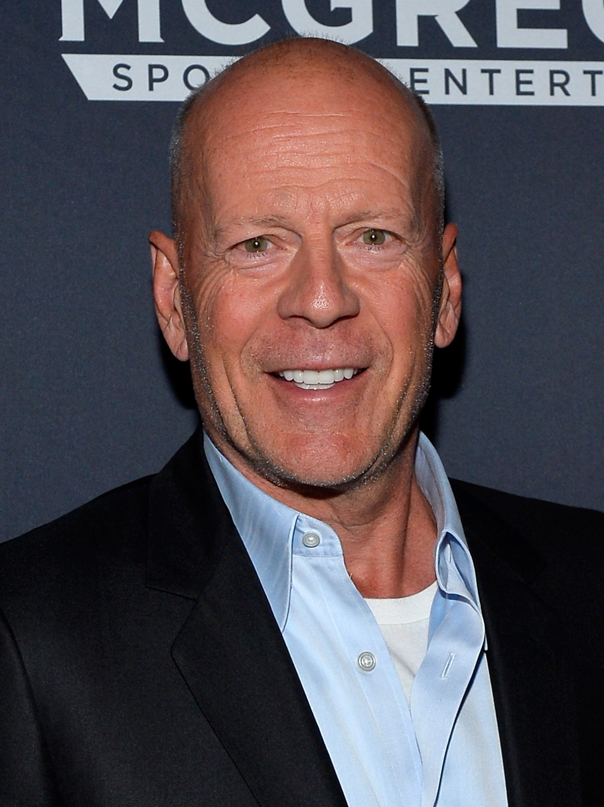
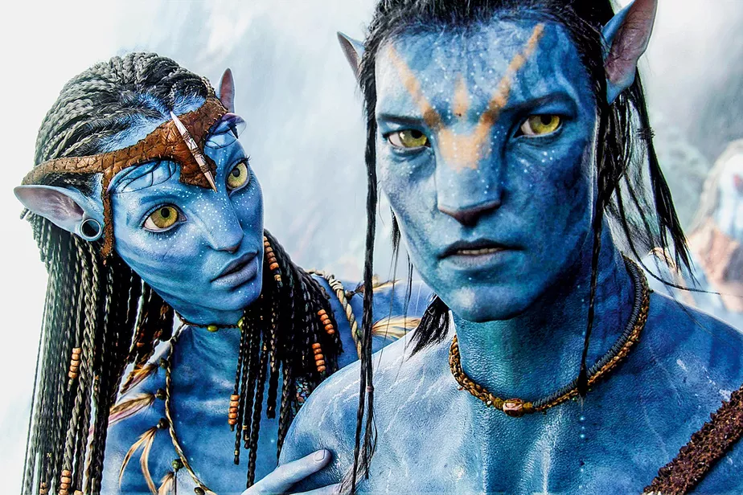
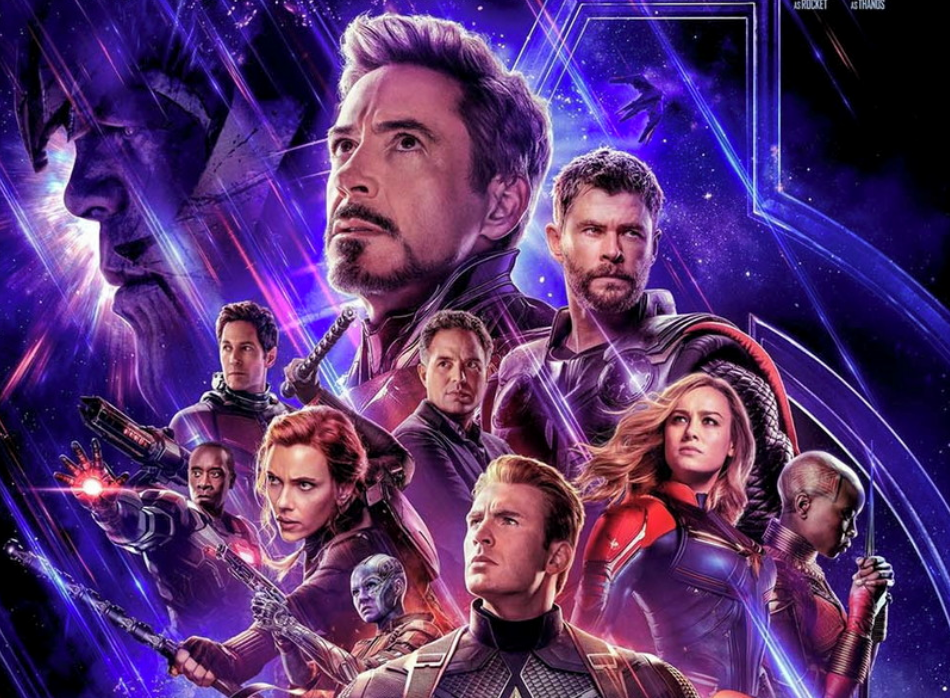
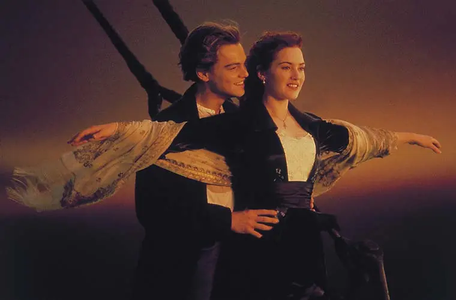
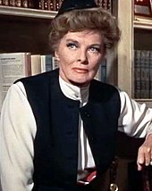
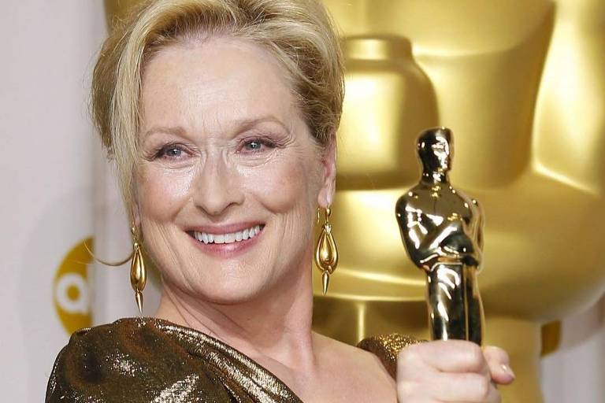

Maiores cachês já pago
Não é de hoje que os atores recebem bastante dinheiro para protagonizar algum filme. Hoje eu irei mostrar quais foram os maiores salários já pagos na industria do cinema:
Bruce Willis
Tom Cruise
Will Smith
Keanu Reeves
- 
-

Maiores Bilheterias
A Elite das bilheterias ? Mostraremos também. Esses são os filmes que mais arrecadaram em toda a história do cinema, passandno de números extraordinários:
-
Avatar
Arrecadação:$2.284.400.000,
-
Vingadores: Ultimato
Arrecadação:$2.284.400.000,
-
Titanic
Arrecadação:$2.284.400.000,
-
Star Wars: Episódio VII
Arrecadação:$2.284.400.000
Atores com mais estatuetas do Oscar
Esses atores com certeza são sinônimo de talente, até porque para ganhar tantos Oscars assim a pessoa tem que ser fera no que faz. Confira abaixo
Katharine Hepburn
Daniel Day Lewis
Meryl Streep
Jack Nicholson
- 
- 
4 Estatuetas
3 Estatuetas
3 Estatuetas
2 Estatuetas
Site em desenvolvimento, em breve mais conteúdo
O site ainda está na fase beta, em breve traremos mais conteúdo...